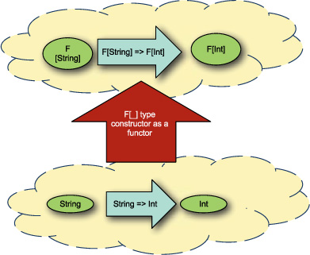

{% include JB/setup %}
{% raw %}
<div>

<div class="calibre5"></div><h2 class="chapter" id="ch11">Chapter 11. <a id="ch11__title" class="calibre6"></a>Patterns in functional programming
      </h2>
      <p class="calibre2"> </p><table cellspacing="5" width="100%" border="1" class="calibre10"><colgroup class="calibre19"><col width="550" class="calibre12"/></colgroup><tbody class="calibre13"><tr class="calibre14"><td class="calibre20"/>
            </tr></tbody></table><div class="calibre4">
         
         <b id="ch11sb01" class="calibre21">In this chapter</b>
         
         <p class="calibre22"></p>
         <ul class="calibre23"><li class="calibre24">Functors, monads, and applicative functors</li>
            
            <li class="calibre24">Configuring applications using applicative style</li>
            
            <li class="calibre24">Composing workflows using monads and for expressions</li>
            
         </ul></div>
      <table cellspacing="5" width="100%" border="1" class="calibre10"><colgroup class="calibre19"><col width="550" class="calibre12"/></colgroup><tbody class="calibre13"><tr class="calibre14"><td class="calibre20"/>
            </tr></tbody></table><p class="calibre2"> </p><p class="noind">Functional programming is the practice of composing programs using functions. It’s an area of software design and architecture
         that has been neglected in mainstream books and classes since the emergence of object-oriented programming. Functional programming
         offers a lot to the object-oriented developer and can nicely complement standard object-oriented practices.
      </p>
      
      <p class="noind">Functional programming is a relatively large topic to try to compress into a single chapter. Instead, this chapter introduces
         a few key abstractions used in functional programming and demonstrates their usage in two different situations. The goal is
         to show one of the many styles of functional programming, rather than turn you into an expert functional programmer.
      </p>
      
      <p class="noind">First, a discussion on some fundamental concepts behind the patterns in functional programming.</p>
      
      
      
      <h3 id="ch11lev1sec1" class="calibre17"><a id="ch11lev1sec1__title" class="calibre6"></a>11.1. Category theory for computer science
      </h3>
      
      <p class="noind"><a id="iddle1146" class="calibre25"></a><a id="iddle1147" class="calibre25"></a><a id="iddle1152" class="calibre25"></a><a id="iddle1274" class="calibre25"></a><a id="iddle1339" class="calibre25"></a><a id="iddle1377" class="calibre25"></a><a id="iddle1389" class="calibre25"></a><a id="iddle1390" class="calibre25"></a><a id="iddle1733" class="calibre25"></a><a id="iddle2125" class="calibre25"></a><i class="calibre9">Category theory</i> is the mathematical study of collections of concepts and arrows. For the purposes of computer science, a concept is a type,
         like <kbd class="calibre18">String</kbd>, <kbd class="calibre18">Int</kbd>, and so on. An arrow is a morphism between concepts—something that converts from one concept to another. Usually in computer
         science, a morphism is a function defined against two types. A category is a grouping of concepts and arrows. For example,
         the category of cats includes all the various types of cats in the world as well as the captions needed to convert from a
         serious cat into a lol cat. Category theory is the study of categories like these and relationships between them. The most
         used category in programming is the categories of types: the classes, traits, aliases and object self types defined in your
         program.
      </p>
      
      <p class="noind">Category theory shows up in many corners of programming but may not always be recognized. This section will introduce a library
         to configure software and introduce the concepts from category theory that are used in the library.
      </p>
      
      <p class="noind">A good way to think of category theory, applied to functional programming, is design patterns. Category theory defines a few
         low-level abstract concepts. These concepts can be directly expressed in a functional language like Scala and have library
         support. When designing software, if a particular entity fits one of these concepts, a whole slew of operations immediately
         becomes available as well as the means to reason through usage. Let’s look at this concept in the context of designing a configuration
         library.
      </p>
      
      <p class="noind">In <a href="kindle_split_010.html#ch02lev1sec4" class="calibre7">section 2.4</a> we explored the usage of Scala’s <kbd class="calibre18">Option</kbd> class as a replacement for nullable values. In particular, this section showed how we can use Options to create <i class="calibre9">walled gardens</i>—that is, functions can be written as if all types aren’t null. These functions can be lifted into functions that will propagate
         empty values. Let’s look at the <kbd class="calibre18">lift3</kbd> function from <a href="kindle_split_010.html#ch02" class="calibre7">chapter 2</a>:
      </p>
      
      <pre id="PLd0e29468" class="calibre8">scala&gt;   def lift3[A,B,C,D](f: Function3[A,B,C,D]) = {
     |     (oa: Option[A], ob: Option[B], oc: Option[C]) =&gt;
     |        for(a &lt;- oa; b &lt;- ob; c &lt;- oc) yield f(a,b,c)
     |   }
lift3: [A,B,C,D](f: (A, B, C) =&gt; D)(
  Option[A], Option[B], Option[C]) =&gt; Option[D]</pre>
      
      <p class="noind">The <kbd class="calibre18">lift3</kbd> function takes a function defined against raw types and converts it to a function that works with <kbd class="calibre18">Option</kbd> types. This lets us wrap Java’s <kbd class="calibre18">DriverManager.getConnection</kbd> method directly and make it option-safe.
      </p>
      
      <p class="noind">The <kbd class="calibre18">lift3</kbd> function uses Scala’s <kbd class="calibre18">for</kbd> expression syntax. Scala’s <kbd class="calibre18">for</kbd> expressions are syntactic sugar for the <kbd class="calibre18">map</kbd>, <kbd class="calibre18">flatMap</kbd>, <kbd class="calibre18">foreach</kbd>, and <kbd class="calibre18">withFilter</kbd> operations defined on a class. The <kbd class="calibre18">for</kbd> expression
      </p>
      
      <pre id="PLd0e29513" class="calibre8">for(a &lt;- oa; b &lt;- ob; c &lt;- oc) yield f(a,b,c)</pre>
      
      <p class="noind">is desugared into the following expression:</p>
      
      <pre id="PLd0e29522" class="calibre8">oa.flatMap(a =&gt; ob.flatMap(b =&gt; oc.map(c =&gt; f(a,b,c))))</pre>
      
      <p class="noind"><a id="iddle1148" class="calibre25"></a><a id="iddle1150" class="calibre25"></a><a id="iddle1219" class="calibre25"></a><a id="iddle1342" class="calibre25"></a><a id="iddle1421" class="calibre25"></a>Each <kbd class="calibre18">&lt;-</kbd> of the <kbd class="calibre18">for</kbd> expression is converted into a <kbd class="calibre18">map</kbd> or <kbd class="calibre18">flatMap</kbd> call. These methods are each associated with a concept in category theory. The <kbd class="calibre18">map</kbd> method is associated with functors, and the <kbd class="calibre18">flatMap</kbd> method is associated with monads. <kbd class="calibre18">For</kbd> expressions make an excellent way to define workflows, which we define in <a href="#ch11lev1sec4" class="calibre7">section 11.4</a>.
      </p>
      
      <p class="noind">A monad is something that can be flattened. <kbd class="calibre18">Option</kbd> is a monad because it has both a <kbd class="calibre18">flatten</kbd> and <kbd class="calibre18">flatMap</kbd> operation that abide by the monadic laws. We’ll cover the details of monads in section 11.2.2. For now, let’s first generalize
         the advanced <kbd class="calibre18">Option</kbd> techniques from <a href="kindle_split_010.html#ch02lev2sec8" class="calibre7">section 2.4.1</a>.
      </p>
      
      <p class="noind">Imagine that we’re designing a configuration library. The goal is to use this library, in combination with a variant of the
         <kbd class="calibre18">lift3</kbd> method, to construct database connections based on the current configuration parameters. This library could read configuration
         parameters from different locations. If any of these locations are updated, the program should automatically alter its behavior
         the next time a database connection is requested. Let’s define a new trait, <kbd class="calibre18">Config</kbd>, that will wrap this logic for us. Because the filesystem is volatile and configuration isn’t guaranteed to exist, the <kbd class="calibre18">Config</kbd> library will also make use of the <kbd class="calibre18">Option</kbd> trait to represent configuration values that weren’t found. Let’s define a minimal <kbd class="calibre18">Config</kbd> trait.
      </p>
      
      <pre id="PLd0e29623" class="calibre8">trait Config[+A] {
  def map[B](f : A =&gt; B) : Config[B]
  def flatMap[B](f : A =&gt; Config[B]): : Config[B]
  def get : A
}</pre>
      
      <p class="noind">The <kbd class="calibre18">Config</kbd> trait consists of three methods. The first, <kbd class="calibre18">map</kbd>, takes a function that operates on the data stored in the <kbd class="calibre18">Config</kbd> object and returns a new <kbd class="calibre18">Config</kbd> object. This is used to transform the underlying configuration data. For example, when reading environment variables of strings,
         the <kbd class="calibre18">map</kbd> method could be used to convert an environment variable into an Integer.
      </p>
      
      <p class="noind">The next method is <kbd class="calibre18">flatMap</kbd>. This method takes a function against the current <kbd class="calibre18">Config</kbd> object and returns a second <kbd class="calibre18">Config</kbd> object. You can use this to construct new <kbd class="calibre18">Config</kbd> objects based on values stored in an initial <kbd class="calibre18">Config</kbd> object. For example, imagine we have a <kbd class="calibre18">Config[java.io.File]</kbd> that holds the location of a secondary configuration file. We can use the <kbd class="calibre18">flatMap</kbd> operation to read this location and then extract more configuration values from that location.
      </p>
      
      <p class="noind">The final method is called <kbd class="calibre18">get</kbd>. This method is unsafe, in that it will attempt to read the current configuration environment, wherever configuration is
         defined to be, and return the resulting configuration values. As with <kbd class="calibre18">Option</kbd>, you shouldn’t use this method until the code calling it knows what to do in the event of failure. Also, because the <kbd class="calibre18">get</kbd> method will read the environment, it can be expensive if performed within a tight loop of the software.
      </p>
      
      <p class="noind">Let’s define a construction operation for <kbd class="calibre18">Config</kbd>. Creating a new <kbd class="calibre18">Config</kbd> object is the case of defining the <kbd class="calibre18">get</kbd> method, because <kbd class="calibre18">map</kbd> and <kbd class="calibre18">flatMap</kbd> can be implemented in terms of <kbd class="calibre18">get</kbd>. For now, let’s assume that <kbd class="calibre18">map</kbd> and <kbd class="calibre18">flatMap</kbd> are implemented appropriately (see the source code for implementations).
      </p>
      
      
      <pre id="PLd0e29712" class="calibre8">object Config {
  def apply[A](data : =&gt; A) = new Config[A] {
    def get = data
  }
}</pre>
      
      <p class="noind"><a id="iddle1097" class="calibre25"></a><a id="iddle1133" class="calibre25"></a><a id="iddle1291" class="calibre25"></a><a id="iddle2020" class="calibre25"></a>The <kbd class="calibre18">Config</kbd> object defines a single method called <kbd class="calibre18">apply</kbd>, which is the constructor for <kbd class="calibre18">Config</kbd> objects. The <kbd class="calibre18">apply</kbd> method takes one parameter, a <i class="calibre9">by-name parameter</i>. By-name parameters in Scala are similar to no-argument functions in that they’ll evaluate their associated expressions every
         time they’re referenced. This means that defining the <kbd class="calibre18">get</kbd> method to reference the data argument will cause the data parameter to be reevaluated each time it’s referenced. Here’s an
         example:
      </p>
      
      <pre id="PLd0e29759" class="calibre8">scala&gt; var x = 1
x: Int = 1

scala&gt; Config({ x += 1; x})
res2: java.lang.Object with config.Config[Int] = ...

scala&gt; res2.get
res3: Int = 2

scala&gt; res2.get
res4: Int = 3</pre>
      
      <p class="noind">First, the variable <kbd class="calibre18">x</kbd> is defined as equal to <kbd class="calibre18">1</kbd>. Next, a <kbd class="calibre18">Config</kbd> object is constructed. The argument is the expression <kbd class="calibre18">{ x +=1; x}</kbd>. This expression should be evaluated every time the <kbd class="calibre18">Config</kbd>’s <kbd class="calibre18">get</kbd> method is called. The next line calls the <kbd class="calibre18">get</kbd> method, and the returned value is <kbd class="calibre18">2</kbd>. The next line calls the <kbd class="calibre18">get</kbd> method again and the return value is now <kbd class="calibre18">3</kbd>. Let’s create a few convenience methods to read configuration locations.
      </p>
      
      <pre id="PLd0e29798" class="calibre8">def environment(name : String) : Config[Option[String]] =
    Config(if (System.getenv.containsKey(name))
      Some(System.getenv.get(name))
    else None)</pre>
      
      <p class="noind">The <kbd class="calibre18">environment</kbd> method will read configuration values from the process environment. The method takes a string of the environment variable
         to read. The <kbd class="calibre18">Config</kbd> object is constructed using an <kbd class="calibre18">if</kbd> expression. If the environment variable is available, the value is returned inside an <kbd class="calibre18">Option</kbd>. If the variable isn’t available, a <kbd class="calibre18">None</kbd> is returned. The full type returned is a <kbd class="calibre18">Config[Option[String]]</kbd>. Let’s try this out on the command line:
      </p>
      
      <pre id="PLd0e29825" class="calibre8">&gt; export test_prop="test_prop"
&gt; scala -cp .
...
scala&gt; val test = environment("test_prop")
test: Config[String] = Config$$anon$1@659c2931

scala&gt; test.get
res0: String = test_prop</pre>
      
      <p class="noind">First, the environment variable <kbd class="calibre18">test_prop</kbd> is exported. Next, the Scala REPL is started and a <kbd class="calibre18">Config</kbd> object pointing to the <kbd class="calibre18">test_prop</kbd> property value is created. When calling <kbd class="calibre18">get</kbd> on this test property, the correct value is displayed.
      </p>
      
      <p class="noind"><a id="iddle1220" class="calibre25"></a><a id="iddle1251" class="calibre25"></a><a id="iddle1275" class="calibre25"></a><a id="iddle1340" class="calibre25"></a><a id="iddle1422" class="calibre25"></a><a id="iddle1599" class="calibre25"></a><a id="iddle1602" class="calibre25"></a><a id="iddle1603" class="calibre25"></a>Now let’s look into constructing database connections based on environment variables. Here’s the original code from <a href="kindle_split_010.html#ch02lev1sec4" class="calibre7">section 2.4</a>:
      </p>
      
      <pre id="PLd0e29893" class="calibre8">scala&gt;   def lift3[A,B,C,D](f : Function3[A,B,C,D]) = {
     |     (oa : Option[A], ob : Option[B], oc : Option[C]) =&gt;
     |        for(a &lt;- oa; b &lt;- ob; c &lt;- oc) yield f(a,b,c)
     |   }
lift3: [A,B,C,D](f: (A, B, C) =&gt; D)(
  Option[A], Option[B], Option[C]) =&gt; Option[D]

scala&gt; lift3(DriverManager.getConnection)</pre>
      
      <p class="noind">The <kbd class="calibre18">lift3</kbd> method takes a three-argument function and converts it into a three-argument function that works against <kbd class="calibre18">Option</kbd> arguments. This is used on the <kbd class="calibre18">Driver-Manager.getConnection</kbd> method to construct a new method that operates on <kbd class="calibre18">Option</kbd>s.
      </p>
      
      <p class="noind">Using <kbd class="calibre18">DriverManager</kbd> with the new <kbd class="calibre18">Config</kbd> library requires lifting the <kbd class="calibre18">getConnection</kbd> function to take <kbd class="calibre18">Config[Option[String]]</kbd> rather than just <kbd class="calibre18">Option[String]</kbd>. Let’s take the simple approach of defining a new <kbd class="calibre18">lift</kbd> function to convert three-argument methods into methods that operate on <kbd class="calibre18">Config</kbd> objects.
      </p>
      
      <pre id="PLd0e29938" class="calibre8">def lift3Config[A,B,C,D](f : Function3[A,B,C,D]) = {
  (ca : Config[A], cb : Config[B], cc : Config[C]) =&gt;
     for(a &lt;- ca; b &lt;- cb; c &lt;- cc) yield f(a,b,c)
}</pre>
      
      <p class="noind">The <kbd class="calibre18">lift3Config</kbd> method takes a three-argument function as its own argument. It returns a new function that takes <kbd class="calibre18">Config</kbd> traits of the original parameters. The implementation uses <kbd class="calibre18">for</kbd> expressions to call the underlying <kbd class="calibre18">flatMap</kbd> and <kbd class="calibre18">map</kbd> operations on the <kbd class="calibre18">Config</kbd> object. The final result is a <kbd class="calibre18">Config</kbd> object wrapping the underlying data. Let’s use this to define a <kbd class="calibre18">DatabaseConnection</kbd> that uses environment variables.
      </p>
      
      <pre id="PLd0e29971" class="calibre8">scala&gt; val databaseConnection =
     |  lift3Config(DriverManager.getConnection)(
     |   Config.environment("jdbc_url"),
     |   Config.environment("jdbc_user"),
     |   Config.environment("jdbc_password"))
databaseConnection: Config[java.sql.Connection]</pre>
      
      <p class="noind">The <kbd class="calibre18">lift3Config</kbd> method is called against the <kbd class="calibre18">lift3</kbd> method called on <kbd class="calibre18">DriveManager.getConnection</kbd>. This creates a three-argument function that works on <kbd class="calibre18">Config[Option[String]]</kbd> types. Finally, this new function is passed three arguments, one for each environment variable. The resulting <kbd class="calibre18">Config</kbd> object will construct a new database connection if the environment variables <kbd class="calibre18">jdbc_url</kbd>, <kbd class="calibre18">jdbc_user</kbd>, and <kbd class="calibre18">jdbc_password</kbd> are all available.
      </p>
      
      <p class="noind">This implementation of <kbd class="calibre18">lift3Config</kbd> should look familiar. It’s almost identical to the <kbd class="calibre18">lift3</kbd> method because both the <kbd class="calibre18">Config</kbd> trait and the <kbd class="calibre18">Option</kbd> trait are instances of the same abstract concept from category theory. Let’s try to reverse engineer the raw concepts behind
         the <kbd class="calibre18">lift</kbd> method to see if we can rescue it for both <kbd class="calibre18">Option</kbd> and <kbd class="calibre18">Config</kbd>.
      </p>
      
      
      
      
      <h3 id="ch11lev1sec2" class="calibre17"><a id="ch11lev1sec2__title" class="calibre6"></a>11.2. Functors and monads, and how they relate to categories
      </h3>
      
      <p class="noind"><a id="iddle1149" class="calibre25"></a><a id="iddle1312" class="calibre25"></a><a id="iddle1396" class="calibre25"></a><a id="iddle1407" class="calibre25"></a>Functors are transformations from one category to another that can also transform and preserve morphisms. A <i class="calibre9">morphism</i> is the changing of one value in a category to another in the same category. In the example of the category of cats, a morphism
         would be akin to a box that takes a dim cat and converts it into a neon glowing cat. In the category of types, the most commonly
         used in computer science, a morphism is a function that converts from one type to another. The functor would be something
         that converts cats into dogs. The functor would be able to convert dim cats into dim dogs and glowing cats into glowing dogs.
         The functor could <i class="calibre9">also</i> convert the box so that it can convert dim dogs into glowing dogs.
      </p>
      
      <p class="noind"><a href="#ch11fig01" class="calibre7">Figure 11.1</a> illustrates functors.
      </p>
      
      
      
      <h5 class="notetitle" id="ch11fig01">Figure 11.1. <a id="ch11fig01__title" class="calibre25"></a>Functor transforming types and functions
      </h5>
      
      
      
      <p class="center1"></p>
      
      
      
      <p class="noind">The circle on the bottom represents the category of all possible types. Inside are the standard <kbd class="calibre18">String</kbd>, <kbd class="calibre18">Double</kbd>, <kbd class="calibre18">Int</kbd>, and any other type that can be defined in Scala. The functor <kbd class="calibre18">F</kbd> is a type constructor in Scala. For any type <kbd class="calibre18">T</kbd> that’s in the category on the bottom, you can place that type in the type constructor <kbd class="calibre18">F[_]</kbd> and get a new type <kbd class="calibre18">F[T]</kbd> shown on the top category. For example, for any type <kbd class="calibre18">T</kbd>, a <kbd class="calibre18">Config[T]</kbd> can be made. The <kbd class="calibre18">Config</kbd> class is a functor.
      </p>
      <p class="calibre2"> </p><table cellspacing="5" width="100%" border="1" class="calibre10"><colgroup class="calibre19"><col width="550" class="calibre12"/></colgroup><tbody class="calibre13"><tr class="calibre14"><td class="calibre20"/>
            </tr></tbody></table><h5 class="notetitle" id="ch11note01">Laws of Functors and Other Properties</h5>
      
      
      <p class="noindclose">Functors, and the other concepts described in this chapter, have mathematical laws that govern their behavior. These laws
         provide a default set of unit tests as well as standard transformations that can be performed on code. This book doesn’t cover
         the laws in detail, but we give sufficient grounding in <kbd class="calibre18">Category</kbd> theory for you to investigate these laws as needed.
      </p>
      
      <table cellspacing="5" width="100%" border="1" class="calibre10"><colgroup class="calibre19"><col width="550" class="calibre12"/></colgroup><tbody class="calibre13"><tr class="calibre14"><td class="calibre20"/>
            </tr></tbody></table><p class="calibre2"> </p><p class="noind">For the transformation to be a functor transformation, it means that all morphisms must be preserved in the transformation.
         If we have a function that manipulates types <a id="iddle1098" class="calibre25"></a><a id="iddle1402" class="calibre25"></a><a id="iddle1406" class="calibre25"></a><a id="iddle1734" class="calibre25"></a>in the first category, we should have a transformed function that operates on the transformed types. For example, if I have
         a function that takes a <kbd class="calibre18">String</kbd> and converts it to an <kbd class="calibre18">Int</kbd>, I should be able to also take a <kbd class="calibre18">Config[String]</kbd> instance and convert it to a <kbd class="calibre18">Config[Int]</kbd> instance. This is what the <kbd class="calibre18">map</kbd> method on <kbd class="calibre18">Option</kbd> and <kbd class="calibre18">Config</kbd> grant. Let’s convert this into an interface:
      </p>
      
      
      
      <h5 class="notetitle" id="ch011list1">Listing 11.1. <a id="ch011list1__title" class="calibre25"></a><kbd class="calibre18">Functor</kbd> typeclass
      </h5>
      <pre id="PLd0e30184" class="calibre8">trait Functor[T[_]] {
   def apply[A](x: A): T[A]
   def map[A,B](x : T[A])(f: A=&gt;B) : T[B]
}</pre>
      
      <p class="noind">The <kbd class="calibre18">apply</kbd> method grants the first property of functors. For any type <kbd class="calibre18">A</kbd>, a <kbd class="calibre18">Functor</kbd> can construct a type <kbd class="calibre18">T[A]</kbd> in the new category. The <kbd class="calibre18">map</kbd> method grants the second property of functors. Given a transformed type <kbd class="calibre18">T[A]</kbd> and a morphism in the original category <kbd class="calibre18">A=&gt;B</kbd>, a value <kbd class="calibre18">T[B]</kbd> can be created. We have a new function that takes <kbd class="calibre18">T[A]</kbd> and returns <kbd class="calibre18">T[B]</kbd>.
      </p>
      
      <p class="noind">Let’s implement the <kbd class="calibre18">Functor</kbd> interface for <kbd class="calibre18">Config</kbd>.
      </p>
      
      <pre id="PLd0e30232" class="calibre8">object ConfigAsFunctor extends Functor[Config] {
  def apply[A](x : A): Config[A] = Config(x)
  def map[A,B](x : Config[A])(f: A=&gt;B) = x.map(f)
}</pre>
      
      <p class="noind">The <kbd class="calibre18">Functor</kbd> implementation for <kbd class="calibre18">Config</kbd> is defined such that the <kbd class="calibre18">apply</kbd> method calls the <kbd class="calibre18">Config</kbd> companion object’s <kbd class="calibre18">apply</kbd> method. The <kbd class="calibre18">map</kbd> method can delegate to the underlying map method on the <kbd class="calibre18">Config</kbd> class.
      </p>
      
      <p class="noind">Finally, let’s create a bit of syntactic sugar so that the <kbd class="calibre18">map</kbd> method on the <kbd class="calibre18">Functor</kbd> typeclass appears to be on the raw type.
      </p>
      
      <pre id="PLd0e30271" class="calibre8">implicit def functorOps[F[_] : Functor, A](ma: F[A]) = new {
  val functor = implicitly[Functor[F]]
  final def map[B](f: A =&gt; B): F[B] = functor.map(ma)(f)
}</pre>
      
      <p class="noind">The implicit method <kbd class="calibre18">functorOps</kbd> creates a new anonymous class that has a local <kbd class="calibre18">map</kbd> method that accepts only a function <kbd class="calibre18">A =&gt; B</kbd>. This simplifies the remaining code samples using <kbd class="calibre18">Functor</kbd>.
      </p>
      
      <p class="noind">Now, we’ll create the <kbd class="calibre18">lift</kbd> method so that it’s generic against the <kbd class="calibre18">Functor</kbd> abstraction.
      </p>
      
      <pre id="PLd0e30301" class="calibre8">def lift[F[_] : Functor] = new {
   val functor = implicitly[Functor[F]]
   def apply3[A,B,C,D](f: (A,B,C) =&gt; D): (
     F[A],F[B],F[C]) =&gt; F[F[F[[D]]] = {
       (fa, fb, fc) =&gt;
          fa map { a =&gt;
            fb map { b =&gt;
              fc map { c =&gt;
               f(a,b,c)
              }
            }
          }
   }
}</pre>
      
      <p class="noind"><a id="iddle1151" class="calibre25"></a><a id="iddle1288" class="calibre25"></a><a id="iddle1313" class="calibre25"></a><a id="iddle1341" class="calibre25"></a><a id="iddle1343" class="calibre25"></a><a id="iddle1397" class="calibre25"></a><a id="iddle1666" class="calibre25"></a><a id="iddle1669" class="calibre25"></a>The new <kbd class="calibre18">lift</kbd> method uses a <kbd class="calibre18">Functor</kbd> to promote elements of the function. The <kbd class="calibre18">apply3</kbd> method accepts a three-argument function and calls <kbd class="calibre18">map</kbd> against each of these methods to chain the method calls. The resulting function is one that accepts all the original arguments
         inside the <kbd class="calibre18">FunctorF[_]</kbd> and returns a nested result type <kbd class="calibre18">F[F[F[D]]</kbd>.
      </p>
      
      <p class="noind">The issue with this method is that the resulting type is <kbd class="calibre18">F[F[F[D]]]</kbd>, not <kbd class="calibre18">F[D]</kbd>. This means for the config library, creating a database connection will result in a <kbd class="calibre18">Config[Config[Config[Connection]]]</kbd> instead of a <kbd class="calibre18">Config[Connection]</kbd>. To resolve this, let’s create a new type trait the extends <kbd class="calibre18">Functor</kbd> and adds a <kbd class="calibre18">flatten</kbd> method. This method will be responsible for collapsing the pattern <kbd class="calibre18">F[F[D]]</kbd> to <kbd class="calibre18">F[D]</kbd>, which should allow the above function to work as desired. This new trait is called a <kbd class="calibre18">Monad</kbd>.
      </p>
      
      
      <h4 id="ch11lev2sec1" class="calibre28">11.2.1. <a id="ch11lev2sec1__title" class="calibre25"></a>Monads
      </h4>
      
      <p class="noind">Monads are a means of combining a functor application, if that functor is an <kbd class="calibre18">endofunctor</kbd>. An <kbd class="calibre18">endofunctor</kbd> is a functor that converts concepts and morphisms in its category back into the same category. Using the cat example, an
         <kbd class="calibre18">endofunctor</kbd> would be a way of converting cats and genetic cat manipulations into different types of cats and cat genetic manipulations.
         Transforming a cat more than once by the same functor could be reduced into single functor application. Similarly, altering
         cat genetic manipulations more than once can be reduced into a single alteration.
      </p>
      
      <p class="noind">In computer science, monads are often used to represent computations. A monad can be used to abstract out the execution behavior
         of a program. Some monads can be used to handle concurrency, exceptions, or even side effects. Using monads in workflows or
         pipelines is discussed in <a href="#ch11lev1sec4" class="calibre7">section 11.4</a>.
      </p>
      
      <p class="noind">Let’s look at the programming definition of a monad in the following listing:</p>
      
      
      
      <h5 class="notetitle" id="ch011list2">Listing 11.2. <a id="ch011list2__title" class="calibre25"></a><kbd class="calibre18">Monad</kbd> typeclass
      </h5>
      <pre id="PLd0e30437" class="calibre8">trait Monad[T[_]] {
  def flatten[A](m : T[T[A]]): T[A]
  def flatMap[A,B](x : T[A])(f : A =&gt; T[B]
    )(implicit func: Functor[T]): T[B] =
      flatten(func.map(x, f))
}</pre>
      
      <p class="noind">The <kbd class="calibre18">Monad</kbd> trait defines the <kbd class="calibre18">flatten</kbd> and <kbd class="calibre18">flatMap</kbd> methods. The <kbd class="calibre18">flatten</kbd> method is used to take a double wrapped type and turn it into a wrapped type. If a <kbd class="calibre18">Functor T[_]</kbd> is applied twice, the monad knows how to combine this to one application. For example, the <kbd class="calibre18">List</kbd> monad can convert a list of lists into a single list with all the underlying elements of the nested lists. The <kbd class="calibre18">Monad</kbd> trait also provides a convenience function <kbd class="calibre18">flatMap</kbd>, which chains the <kbd class="calibre18">flatten</kbd> and <kbd class="calibre18">map</kbd> calls for convenience.
      </p>
      
      
      <p class="noind"></p><p class="calibre2"> </p><table cellspacing="5" width="100%" border="1" class="calibre10"><colgroup class="calibre19"><col width="550" class="calibre12"/></colgroup><tbody class="calibre13"><tr class="calibre14"><td class="calibre20"/>
            </tr></tbody></table><div class="calibre4">
         
         <b id="ch11sb02" class="calibre21">Monad and functor differences</b>
         
         <p class="noind"><a id="iddle1668" class="calibre25"></a>In reality, a monad is the <kbd class="calibre18">flatten</kbd> operation for a functor. If you were to encode the category theory directly into the type system, the <kbd class="calibre18">flatMap</kbd> method would require an implicit <kbd class="calibre18">Functor</kbd>. For category theory applied to computer science, in this instance at least, everything is in the category of types. The
            type constructor <kbd class="calibre18">F[_]</kbd> applied to a type <kbd class="calibre18">T</kbd> results in the type <kbd class="calibre18">F[T]</kbd>, which is in the same category of types. A monad is a means of taking two such applications and reducing them to a single—that
            is, <kbd class="calibre18">F[F[T]]</kbd> becomes <kbd class="calibre18">F[T]</kbd>.
         </p>
         
         <p class="noind">If you think of monads as functions, then it’s equivalent to taking the function <kbd class="calibre18">def addOne(x: Int) = x +1</kbd> and the expression <kbd class="calibre18">addOne(addOne(5))</kbd> and converting it to the function <kbd class="calibre18">def addTwo(x: Int) = x +2</kbd> and the resulting expression <kbd class="calibre18">addTwo(5)</kbd>. Now imagine such a translation done against types.
         </p>
         
         <p class="noind">Monads are means of combining functor applications on types, hence <kbd class="calibre18">F[F[T]]</kbd> being shortened to <kbd class="calibre18">F[T]</kbd> through use of a monad.
         </p>
         
      </div>
      <table cellspacing="5" width="100%" border="1" class="calibre10"><colgroup class="calibre19"><col width="550" class="calibre12"/></colgroup><tbody class="calibre13"><tr class="calibre14"><td class="calibre20"/>
            </tr></tbody></table><p class="calibre2"> </p><p class="noind">Monads are, among other things, a means of preventing bloat in types and accessors. We can take a nested list of lists and
         treat it as a single list, which has a more convenient syntax.
      </p>
      
      <p class="noind">Again, let’s create a convenience implicit to reduce the syntactic noise of using the <kbd class="calibre18">Monad</kbd> type trait.
      </p>
      
      <pre id="PLd0e30549" class="calibre8">implicit def monadOps[M[_] : Functor : Monad, A](ma: M[A]) = new {
  val monad = implicitly[Monad[M]]
  def flatten[B](implicit $ev0: M[A] &lt;:&lt; M[M[B]]): M[B] =
    monad.flatten(ma)
  def flatMap[B](f: A =&gt; M[B]): M[B] =
    monad.flatMap(ma)(f)
}</pre>
      
      <p class="noind">The implicit method <kbd class="calibre18">monadOps</kbd> creates a single anonymous class. The <kbd class="calibre18">flatten</kbd> method uses the implicit type constraint trick from <a href="kindle_split_015.html#ch07lev2sec4" class="calibre7">section 7.2.3</a> to ensure that the value inside the monad <kbd class="calibre18">M[_]</kbd> is another <kbd class="calibre18">M[_]</kbd> value. The <kbd class="calibre18">flatMap</kbd> method delegates to the <kbd class="calibre18">Monad</kbd> trait’s <kbd class="calibre18">flatMap</kbd> method.
      </p>
      
      <p class="noind">Now, let’s modify the <kbd class="calibre18">lift</kbd> function to make use of the <kbd class="calibre18">Monad</kbd> trait.
      </p>
      
      <pre id="PLd0e30591" class="calibre8">def lift[F[_] : Monad : Functor] = new {
   val m = implicitly[Monad[F]]
   val func = implicitly[Functor[F]]
   def apply3[A,B,C,D](f: (A,B,C) =&gt; D): (F[A], F[B], F[C]) =&gt; F[D] = {
        (fa, fb, fc) =&gt;
          m.flatMap(fa) { a =&gt;
            m.flatMap(fb) { b =&gt;
              func.map(fc) { c =&gt;
               f(a,b,c)
              }
            }
          }
   }
}</pre>
      
      <p class="noind"><a id="iddle1088" class="calibre25"></a><a id="iddle1245" class="calibre25"></a><a id="iddle1246" class="calibre25"></a><a id="iddle1395" class="calibre25"></a><a id="iddle1408" class="calibre25"></a><a id="iddle1584" class="calibre25"></a><a id="iddle1735" class="calibre25"></a>The new <kbd class="calibre18">lift</kbd> method uses a <kbd class="calibre18">Monad</kbd> type class instead of a <kbd class="calibre18">Functor</kbd>. This <kbd class="calibre18">lift</kbd> method looks similar to the original <kbd class="calibre18">lift</kbd> method for <kbd class="calibre18">Option</kbd>, except that it can generically <kbd class="calibre18">lift</kbd> functions to operate against monads. Let’s try it out.
      </p>
      
      <pre id="PLd0e30660" class="calibre8">scala&gt; lift[Option] apply3 java.sql.DriverManager.getConnection
res4: (Option[String], Option[String],
       Option[String]) =&gt; Option[java.sql.Connection] =
    &lt;function3&gt;</pre>
      
      <p class="noind">The <kbd class="calibre18">lift</kbd> method is called using <kbd class="calibre18">Option</kbd> as the type parameter. The <kbd class="calibre18">apply3</kbd> method is called directly against <kbd class="calibre18">java.sql.DriverManager.getConnection(...)</kbd>. The result is a new function that accepts three <kbd class="calibre18">Option[String]</kbd> values and returns an <kbd class="calibre18">Option[Connection]</kbd>.
      </p>
      
      <p class="noind">Monads and functors form the basic building blocks of lots of fundamental concepts in programming. We’ll explore these more
         in depth in <a href="#ch11lev1sec4" class="calibre7">section 11.4</a>. An abstraction lives between monads and functors. This abstraction can be used as an alternative mechanism of writing the
         <kbd class="calibre18">lift</kbd> function. Instead of relying on a <kbd class="calibre18">flatMap</kbd> operation, a function can curried and values fed into it in an applicative style.
      </p>
      
      
      
      
      <h3 id="ch11lev1sec3" class="calibre17"><a id="ch11lev1sec3__title" class="calibre6"></a>11.3. Currying and applicative style
      </h3>
      
      <p class="noind"><i class="calibre9">Currying</i> is the conversion of a function of multiple parameters into a chain of functions that accept a single parameter. A curried
         function accepts one of its arguments and returns a function that accepts the next argument. This chain continues until the
         last function returns a result. In Scala, any function of multiple parameters can be curried.
      </p>
      
      <p class="noind"><i class="calibre9">Applicative style</i> refers to using curried functions to drive parameters in applicative functors through them. Applicative functors are functors
         that also support a method to convert mapped morphisms into morphisms against mapped types. In English, this means that if
         we have a list of functions, an applicative functor can create a single function that accepts a list of argument values and
         returns a new list of results.
      </p>
      
      
      <h4 id="ch11lev2sec2" class="calibre28">11.3.1. <a id="ch11lev2sec2__title" class="calibre25"></a>Currying
      </h4>
      
      <p class="noind">Currying is taking a function of several arguments and turning it into a function that takes a single argument and returns
         a function that takes the next argument that returns a function that takes the next argument and so on, until finally one
         of the functions returns a value. In Scala, all functions have a <kbd class="calibre18">curried</kbd> method that can be used to convert them from multiargument functions into curried functions. Let’s try it out:
      </p>
      
      <pre id="PLd0e30728" class="calibre8">scala&gt; val x = (x:Int, y:Double, z: String) =&gt; z+y+x
x: (Int, Double, String) =&gt; java.lang.String = &lt;function3&gt;

scala&gt; x.curried
res0: (Int) =&gt; (Double) =&gt; (String) =&gt; java.lang.String = &lt;function1&gt;</pre>
      
      <p class="noind">The first line constructs a function that takes three arguments: an integer, a double, and a string. The second calls <kbd class="calibre18">curried</kbd> against it, which returns a function of the type <a id="iddle1314" class="calibre25"></a><a id="iddle1316" class="calibre25"></a><kbd class="calibre18">Int =&gt; Double =&gt; String =&gt; String</kbd>. This function takes an <kbd class="calibre18">Int</kbd> and returns another function <kbd class="calibre18">Double =&gt; String =&gt; String</kbd>. This function takes a <kbd class="calibre18">Double</kbd> and returns a function that takes a <kbd class="calibre18">String</kbd> and returns a <kbd class="calibre18">String</kbd>. A single function of multiple arguments is converted into a chain of functions, each returning another function until all
         arguments have been satisfied and a return value is made. Currying is pretty easy to do by hand; let’s try it out.
      </p>
      
      <pre id="PLd0e30769" class="calibre8">scala&gt; val y = (a: Int) =&gt; (b: Double) =&gt; (c: String) =&gt; x(a,b,c)
y: (Int) =&gt; (Double) =&gt; (String) =&gt; java.lang.String = &lt;function1&gt;</pre>
      
      <p class="noind">This line constructs an anonymous function <kbd class="calibre18">y</kbd> that takes an <kbd class="calibre18">Int</kbd>, called <kbd class="calibre18">a</kbd>, and returns the function defined by the rest of the expression. This same trick defines a nested anonymous function, until
         eventually the function <kbd class="calibre18">x</kbd> defined earlier is called. Note that this function has the same signature as <kbd class="calibre18">x.curried</kbd>. The trick is that each call to a function captures a portion of the argument list of the original function and returns a
         new function for the remaining values.
      </p>
      
      <p class="noind">This trick can be used when attempting to promote a function of multiple simple parameters to work with values inside a <kbd class="calibre18">Functor</kbd>. Let’s redefine the <kbd class="calibre18">lift</kbd> method to use only a <kbd class="calibre18">Functor</kbd>.
      </p>
      
      <pre id="PLd0e30805" class="calibre8">def lift[F[_]: Functor] = new {
   def apply3[A,B,C,D](f: (A,B,C) =&gt; D): (F[A], F[B], F[C]) =&gt; F[D] = {
       (fa, fb, fc) =&gt;
          val tmp: F[B =&gt; C =&gt; D] = fa.map(f.curried)
          ...?...
   }
}</pre>
      
      <p class="noind">The new implementation for the <kbd class="calibre18">apply3</kbd> method in <kbd class="calibre18">lift</kbd> uses the map operation on <kbd class="calibre18">Functor</kbd> against the curried function. The result is a function <kbd class="calibre18">B =&gt; C =&gt; D</kbd> wrapped inside the <kbd class="calibre18">F[_]</kbd> functor.
      </p>
      
      <p class="noind">Let’s break this down to see what’s happening in the types. First a curried function is created.</p>
      
      <pre id="PLd0e30832" class="calibre8">scala&gt; f.curried
res0: A =&gt; (B =&gt; C =&gt; D) = &lt;function1&gt;</pre>
      
      <p class="noind">The parentheses in the resulting expression have been adjusted to show the true type. The result is a single function that
         takes an <kbd class="calibre18">A</kbd> and produces a value. Because the <kbd class="calibre18">fa</kbd> parameter is a value of <kbd class="calibre18">F[A]</kbd>, we can combine the curried function with the <kbd class="calibre18">fa</kbd> value using the <kbd class="calibre18">map</kbd> method.
      </p>
      
      <pre id="PLd0e30856" class="calibre8">scala&gt; fa.map[B =&gt; C =&gt; D](f.curried)
res0: F[B =&gt; (C =&gt; D)] = Config(&lt;function1&gt;)</pre>
      
      <p class="noind">The <kbd class="calibre18">map</kbd> method on <kbd class="calibre18">fa</kbd> is called against the curried function. The result is a <kbd class="calibre18">F[_]</kbd> containing the rest of the function. Remember the <kbd class="calibre18">Functor</kbd> defines its <kbd class="calibre18">map</kbd> method as <kbd class="calibre18">def map[A,B](m: F[A])(f: A=&gt; B): F[B]</kbd>. In this case the second type parameter is a function <kbd class="calibre18">B=&gt;C=&gt;D</kbd>.
      </p>
      
      <p class="noind"><a id="iddle1089" class="calibre25"></a><a id="iddle1276" class="calibre25"></a><a id="iddle1391" class="calibre25"></a>Now there’s a problem. The code can’t continue to use the <kbd class="calibre18">map</kbd> method defined on <kbd class="calibre18">Functor</kbd> because the remaining function is wrapped inside the functor <kbd class="calibre18">F[_]</kbd>. To solve this, let’s define a new abstraction, <kbd class="calibre18">Applicative</kbd>, as shown in the following listing:
      </p>
      
      
      
      <h5 class="notetitle" id="ch011list3">Listing 11.3. <a id="ch011list3__title" class="calibre25"></a><kbd class="calibre18">Applicative</kbd> typeclass
      </h5>
      <pre id="PLd0e30925" class="calibre8">trait Applicative[F[_]] {
  def lift2[A,B](f: F[A=&gt;B])(ma: F[A]): F[B]
}</pre>
      
      <p class="noind">The <kbd class="calibre18">Applicative</kbd> trait is defined for the type <kbd class="calibre18">F[_]</kbd>. It consists of one method, <kbd class="calibre18">lift2</kbd>, that takes a function inside an <kbd class="calibre18">F[_]</kbd> and a value inside an <kbd class="calibre18">F[_]</kbd> and returns the result inside an <kbd class="calibre18">F[_]</kbd>. Notice that this is different from a monad, which can flatten <kbd class="calibre18">F[F[_]]</kbd>. The <kbd class="calibre18">lift</kbd> method can now be completed using applicative functors.
      </p>
      
      <pre id="PLd0e30958" class="calibre8">def lift[F[_]: Functor: Applicative] = new {
    val func = implicitly[Functor[F]]
    val app = implicitly[Applicative[F]]
    def apply3[A,B,C,D](f: (A,B,C) =&gt; D): (F[A], F[B], F[C]) =&gt; F[D] = {
       (fa, fb, fc) =&gt;
          val tmp: F[B =&gt; C =&gt; D] = func.map(fa)(f.curried)
          val tmp2: F[C =&gt; D] = app.lift2(tmp)(fb)
          app.lift2(tmp2)(fc)
    }
  }</pre>
      
      <p class="noind">The <kbd class="calibre18">lift</kbd> function now requires both a <kbd class="calibre18">Functor</kbd> and an <kbd class="calibre18">Applicative</kbd> context bound. As before, the function is curried and applied against the first argument using the functor’s <kbd class="calibre18">map</kbd> method. But the applicative functor’s <kbd class="calibre18">lift2</kbd> method can be used to apply the second argument of the function. Finally, the <kbd class="calibre18">lift2</kbd> method is used again to apply the third argument of the original function. The final result is the value of type <kbd class="calibre18">D</kbd> wrapped inside the functor <kbd class="calibre18">F[_]</kbd>.
      </p>
      
      <p class="noind">Now, let’s try the method against the previous example of using the <kbd class="calibre18">Driver-Manager.getConnection</kbd> method.
      </p>
      
      <pre id="PLd0e30997" class="calibre8">scala&gt; lift[Config] apply3 java.sql.DriverManager.getConnection
res0: (Config[String], Config[String],
       Config[String]) =&gt; Config[java.sql.Connection] =
    &lt;function3&gt;</pre>
      
      <p class="noind">The result is the same as it was for using functor and monad. The two reasons to choose this style instead is that there are
         more things that can implement the <kbd class="calibre18">lift2</kbd> method for applicative functors than can implement the flatten method for monads and that applicative functors can compute
         in parallel while monadic workflows are sequential.
      </p>
      
      
      
      <h4 id="ch11lev2sec3" class="calibre28">11.3.2. <a id="ch11lev2sec3__title" class="calibre25"></a>Applicative style
      </h4>
      
      <p class="noind">An alternative syntax to lifting functions into applicative functors is known as <i class="calibre9">applicative style</i>. This can be used in Scala to simplify the construction of complex function <a id="iddle1087" class="calibre25"></a><a id="iddle1221" class="calibre25"></a><a id="iddle1254" class="calibre25"></a><a id="iddle2126" class="calibre25"></a>dependencies, keeping the values inside an applicative functor. For example, using the <kbd class="calibre18">Config</kbd> library defined earlier, you can construct an entire program from functions and applicative applications. Let’s take a look.
      </p>
      <p class="calibre2"> </p><table cellspacing="5" width="100%" border="1" class="calibre10"><colgroup class="calibre19"><col width="550" class="calibre12"/></colgroup><tbody class="calibre13"><tr class="calibre14"><td class="calibre20"/>
            </tr></tbody></table><div class="calibre4">
         
         <b id="ch11sb03" class="calibre21">Rule 27: Use applicative style to join parallel processes</b>
         
         <p class="noind">Applicative functors provide a way to take two computations and join them together using a function. The <kbd class="calibre18">Traversable</kbd> example highlights how two collections can be parallelized into pairs. Applicative functors and parallel processing go together
            like bread and butter.
         </p>
         
      </div>
      <table cellspacing="5" width="100%" border="1" class="calibre10"><colgroup class="calibre19"><col width="550" class="calibre12"/></colgroup><tbody class="calibre13"><tr class="calibre14"><td class="calibre20"/>
            </tr></tbody></table><p class="calibre2"> </p><p class="noind">Assuming there’s a software system that’s composed of two subsystems: the <kbd class="calibre18">DataStore</kbd> and the <kbd class="calibre18">WorkerPool</kbd>. The class hierarchy for this system looks as follows:
      </p>
      
      <pre id="PLd0e31067" class="calibre8">trait DataStore { ... }
trait WorkerPool { ... }
class Application(ds: DataStore, pool: WorkerPool) { ... }</pre>
      
      <p class="noind">The <kbd class="calibre18">DataStore</kbd> class and <kbd class="calibre18">WorkerPool</kbd> class are defined with all the methods required for their subcomponent. The <kbd class="calibre18">Application</kbd> class is defined as taking a <kbd class="calibre18">DataStore</kbd> instance and a <kbd class="calibre18">WorkerPool</kbd> instance. Now, when constructing the application, the following can be done with applicative style:
      </p>
      
      <pre id="PLd0e31091" class="calibre8">def dataStore: Config[DataStore]
def workerPool: Config[WorkerPool]
def system: Config[Application] =
  (Applicative build dataStore).and(
   workerPool) apply (new Application(_,_))</pre>
      
      <p class="noind">The <kbd class="calibre18">dataStore</kbd> and <kbd class="calibre18">workerPool</kbd> methods are defined as abstraction constructors of <kbd class="calibre18">DataStore</kbd> inside a <kbd class="calibre18">Config</kbd> object. The entire system is composed by creating an <kbd class="calibre18">Applicative</kbd> instance on the <kbd class="calibre18">dataStore</kbd>, combining the <kbd class="calibre18">workerPool</kbd> and applying that to an anonymous function <kbd class="calibre18">(new Application(_,_))</kbd>. The result is an <kbd class="calibre18">Application</kbd> embedded in a <kbd class="calibre18">Config</kbd> object. The <kbd class="calibre18">Applicative</kbd> call creates a builder that will use the <kbd class="calibre18">Config[_]</kbd> instances to construct something that can accept a function of raw types and return a resulting <kbd class="calibre18">Config</kbd> object.
      </p>
      <p class="calibre2"> </p><table cellspacing="5" width="100%" border="1" class="calibre10"><colgroup class="calibre19"><col width="550" class="calibre12"/></colgroup><tbody class="calibre13"><tr class="calibre14"><td class="calibre20"/>
            </tr></tbody></table><h5 class="notetitle" id="ch11note02">Haskell Versus Scala</h5>
      
      
      <p class="noindclose">Applicative style came to Scala from the Haskell language, where functions are curried by default. The syntax presented here
         is a Scala idiom and doesn’t mimic the Haskell directly. In Haskell, applicative style uses the <kbd class="calibre18">&lt;*&gt;</kbd> operator, called <i class="calibre9">apply</i>, against a curried function on Applicative functors—that is, Haskell has a <kbd class="calibre18">&lt;*&gt;</kbd> method that performs the same function as the <kbd class="calibre18">lift2</kbd> method in the <kbd class="calibre18">Applicative</kbd> trait.
      </p>
      
      <table cellspacing="5" width="100%" border="1" class="calibre10"><colgroup class="calibre19"><col width="550" class="calibre12"/></colgroup><tbody class="calibre13"><tr class="calibre14"><td class="calibre20"/>
            </tr></tbody></table><p class="calibre2"> </p><p class="noind">This applicative style, combined with the <kbd class="calibre18">Config</kbd> class, can be used to do a form of dependency injection in Scala. Software can be composed of simple classes that take their
         dependencies in the constructor and a separate configuration can be used to wire all the pieces together using functions.
         This is an ideal blend of object orientation and functional programming in Scala. For example, if the <kbd class="calibre18">DataStore</kbd> trait had an implementation that used a single JDBC connection like the following:
      </p>
      
      <pre id="PLd0e31171" class="calibre8">class ConnectionDataStore(conn: java.sql.Connection) extends DataStore</pre>
      
      <p class="noind"><a id="iddle1092" class="calibre25"></a><a id="iddle1131" class="calibre25"></a><a id="iddle1224" class="calibre25"></a><a id="iddle1277" class="calibre25"></a><a id="iddle1292" class="calibre25"></a><a id="iddle1315" class="calibre25"></a>Then the entire application can be configured as shown in the following listing:
      </p>
      
      
      
      <h5 class="notetitle" id="ch011list4">Listing 11.4. <a id="ch011list4__title" class="calibre25"></a>Configuring an application using the <kbd class="calibre18">Config</kbd> class and applicative builder
      </h5>
      <pre id="PLd0e31218" class="calibre8">def jdbcUrl: Config[String] = environment("jdbc.url")
def jdbcUser: Config[String] = environment("jdbc.user")
def jdbcPw: Config[String] = environment("jdbc.pw")
def connection: Config[Connection] =
  (Applicative build jdbcUrl).and(jdbcUser).and(jdbcPw).apply(
    DriverManager.getConnection)

def dataStore: Config[DataStore] =
  connection map (c =&gt; new ConnectionDataStore(f))
def workerPool: Config[WorkerPool] = ...

def system: Config[Application] =
  Applicative build dataStore and workerPool apply (
    new Application(_,_))</pre>
      
      <p class="noind">The <kbd class="calibre18">environment</kbd> function is defined in 11.7. This function pulls the value of an environment variable if it exists and is used to pull values
         for the JDBC connection’s URL, user, and password. The applicative builder is then used to construct a <kbd class="calibre18">Config [Connection]</kbd> using these <kbd class="calibre18">config</kbd> values and the <kbd class="calibre18">DriverManager.getConnection</kbd> method directly. This connection is then used to construct the <kbd class="calibre18">dataStore</kbd> configuration using the map method on <kbd class="calibre18">Config</kbd> to take the configured JDBC connection and use it to instantiate the <kbd class="calibre18">ConnectionDataStore</kbd>. Finally, the applicative builder is used to construct the application from the <kbd class="calibre18">dataStore</kbd> and <kbd class="calibre18">workerPool</kbd> configuration.
      </p>
      
      <p class="noind">Although this is pure Scala code, the concept should look familiar to users of Java inversion-of-control containers. This
         bit of code represents the configuration of software separate from the definition of its components. There’s no need to resort
         to XML or configuration files in Scala.
      </p>
      
      <p class="noind">Let’s look at how the <kbd class="calibre18">Applicative</kbd> object build method works.
      </p>
      
      <pre id="PLd0e31263" class="calibre8">object Applicative {
  def build[F[_]: Functor: Applicative, A](m: F[A]) =
    new ApplicativeBuilder[F,A](m)
}</pre>
      
      <p class="noind">The <kbd class="calibre18">build</kbd> method on <kbd class="calibre18">Applicative</kbd> takes two types, <kbd class="calibre18">F[_]</kbd> and <kbd class="calibre18">A</kbd>. The <kbd class="calibre18">F[_]</kbd> type is required to have an applicative and functor instance available implicitly. The <kbd class="calibre18">build</kbd> method accepts a parameter of type <kbd class="calibre18">F[A]</kbd> and returns a new <kbd class="calibre18">ApplicativeBuilder</kbd> class. Let’s look at the <kbd class="calibre18">ApplicativeBuilder</kbd> class in the following listing:
      </p>
      
      
      
      <h5 class="notetitle" id="ch011list5">Listing 11.5. <a id="ch011list5__title" class="calibre25"></a><kbd class="calibre18">ApplicativeBuilder</kbd> class
      </h5>
      <pre id="PLd0e31306" class="calibre8">class ApplicativeBuilder[F[_],A](ma: F[A])(
    implicit functor: Functor[F], ap: Applicative[F]) {
  import Implicits._

  def apply[B](f: A =&gt; B): F[B] = ma.map(f)

  def and[B](mb: F[B]) = new ApplicativeBuilder2(mb)
  class ApplicativeBuilder2[B](mb: F[B]) {

    def apply[C](f: (A, B) =&gt; C): F[C] =
      ap.lift2((ma.map(f.curried)))(mb)

    def and[C](mc: F[C]) = new AppplicativeBuilder3[C](mc)

    class AppplicativeBuilder3[C](mc: F[C]) {

      def apply[D](f: (A,B,C) =&gt; D): F[D] =
        ap.lift2(ap.lift2((ma.map(f.curried)))(mb))(mc)

      ...
    }
  }
}</pre>
      
      <p class="noind"><a id="iddle1090" class="calibre25"></a><a id="iddle1091" class="calibre25"></a><a id="iddle1099" class="calibre25"></a><a id="iddle1247" class="calibre25"></a><a id="iddle1736" class="calibre25"></a>The <kbd class="calibre18">ApplicativeBuilder</kbd> class takes in its constructor the same arguments as the <kbd class="calibre18">Applicative.build</kbd> method. The class consists of two methods, <kbd class="calibre18">apply</kbd> and <kbd class="calibre18">and</kbd>, as well as a nested class <kbd class="calibre18">ApplicativeBuilder2</kbd>. The <kbd class="calibre18">apply</kbd> method takes a function against raw types <kbd class="calibre18">A</kbd> and <kbd class="calibre18">B</kbd> and applies the captured member <kbd class="calibre18">ma</kbd> against it, creating an <kbd class="calibre18">F[B]</kbd>. The <kbd class="calibre18">and</kbd> method takes another applicative functor instance of type <kbd class="calibre18">F[B]</kbd> and constructs an <kbd class="calibre18">ApplicativeBuilder2</kbd>. The <kbd class="calibre18">ApplicativeBuilder2</kbd> class also has two methods: <kbd class="calibre18">apply</kbd> and <kbd class="calibre18">and</kbd>. The <kbd class="calibre18">apply</kbd> method is a bit more odd. Like the <kbd class="calibre18">lift</kbd> example earlier, this method curries the raw function <kbd class="calibre18">f</kbd> and uses the <kbd class="calibre18">map</kbd> and <kbd class="calibre18">lift2</kbd> methods to feed arguments to the lifted function inside the functor. The <kbd class="calibre18">and</kbd> method constructs an <kbd class="calibre18">ApplicativeBuilder3</kbd> that looks a lot like <kbd class="calibre18">ApplicativeBuilder2</kbd> but with one more parameter. This chain of nested builder classes goes all the way to Scala’s limit on anonymous function
         arguments of 23.
      </p>
      
      <p class="noind">Applicative style is a general concept that can be applied in many situations. For example, let’s use it to compute all the
         possible pairings of elements from two collections.
      </p>
      
      <pre id="PLd0e31417" class="calibre8">scala&gt; (Applicative build Traversable(1,2) and
    Traversable(3,4) apply (_ -&gt; _))
res1: Traversable[(Int, Int)] =
    List((1,3), (1,4), (2,3), (2,4))</pre>
      
      <p class="noind">The <kbd class="calibre18">Applicative</kbd> builder is used to combine two <kbd class="calibre18">Traversable</kbd> lists. The <kbd class="calibre18">apply</kbd> method is given a function that takes two arguments and creates a pairing of the two. The resulting list is each element
         of the first list paired with each element of the second list.
      </p>
      
      <p class="noind">Functors and monads help express programs through functions and function transformations. This applicative style, blended
         with solid object-oriented techniques, leads to powerful results. As seen from the config library, applicative style can be
         used to blend pure functions and those that wall off dangers into things like <kbd class="calibre18">Option</kbd> or <kbd class="calibre18">Config</kbd>. Applicative style is usually used at the interface between raw types like <kbd class="calibre18">String</kbd> and wrapped types like <kbd class="calibre18">Option[String]</kbd>.
      </p>
      
      <p class="noind">Another common use case in functional programming is creating reusable workflows.</p>
      
      
      
      
      
      <h3 id="ch11lev1sec4" class="calibre17"><a id="ch11lev1sec4__title" class="calibre6"></a>11.4. Monads as workflows
      </h3>
      
      <p class="noind"><a id="iddle1320" class="calibre25"></a><a id="iddle1322" class="calibre25"></a><a id="iddle1398" class="calibre25"></a><a id="iddle1670" class="calibre25"></a><a id="iddle1809" class="calibre25"></a><a id="iddle2016" class="calibre25"></a>A monadic workflow is a pipeline of computation that remains embedded inside the monad. The monad can control the execution
         and behavior of the computation that’s nested inside it. Monadic workflows are used to control things like side effects, control
         flow, and concurrency. A great example is using monadic workflows for automated resource management.
      </p>
      <p class="calibre2"> </p><table cellspacing="5" width="100%" border="1" class="calibre10"><colgroup class="calibre19"><col width="550" class="calibre12"/></colgroup><tbody class="calibre13"><tr class="calibre14"><td class="calibre20"/>
            </tr></tbody></table><div class="calibre4">
         
         <b id="ch11sb04" class="calibre21">Rule 28: Use monadic workflows for sequential computations</b>
         
         <p class="noind">Monadic workflows can be used to encapsulate a complicated sequential process. Monadic workflows are often used with collections
            to search through a domain model for relevant data. In the managed resource example, monadic workflows are used to ensure
            that when a sequential process is complete, resources are cleaned up. if you need parallelism, use applicative style, if you
            need sequencing, use monadic workflows.
         </p>
         
      </div>
      <table cellspacing="5" width="100%" border="1" class="calibre10"><colgroup class="calibre19"><col width="550" class="calibre12"/></colgroup><tbody class="calibre13"><tr class="calibre14"><td class="calibre20"/>
            </tr></tbody></table><p class="calibre2"> </p><p class="noind">Automated resource management is a technique where a resource, such as a file handle, closes automatically for the programmer
         when that resource is no longer needed. Though there are many techniques to perform this function, one of the simplest is
         to use the <i class="calibre9">loaner</i> pattern. The loaner pattern is where one block of code owns the resource and delegates its usage to a closure. Here’s an
         example:
      </p>
      
      <pre id="PLd0e31513" class="calibre8">def readFile[T](f: File)(handler: FileInputStream =&gt; T): T = {
  val resource = new java.io.FileInputStream(f)
  try {
    handler(resource)
  } finally  {
    resource.close()
  }
}</pre>
      
      <p class="noind">The <kbd class="calibre18">readFile</kbd> function accepts a <kbd class="calibre18">File</kbd> and a handler function. The file is used to open a <kbd class="calibre18">FileInputStream</kbd>. This stream is loaned to the handler function, ensuring that the stream is closed in the event of an exception. This method
         can then be used as follows:
      </p>
      
      <pre id="PLd0e31531" class="calibre8">readFile(new java.io.File("test.txt")) { input =&gt;
  println(input.readByte)
}</pre>
      
      <p class="noind">The example shows how to use the <kbd class="calibre18">readFile</kbd> method to read the first byte of the <kbd class="calibre18">test.txt</kbd> file. Notice how the code doesn’t open or close the resource; it’s merely <i class="calibre9">loaned</i> the resource for usage. This technique is powerful, but it can be built up even further.
      </p>
      
      <p class="noind">It’s possible that a file may need to be read in stages, where each stage performs a portion of the action. It’s also possible
         that the file may need to be read repeatedly. All of this can be handled by creating an automated resource management <i class="calibre9">monad</i>. Let’s take a cut at defining the class, as shown in the following listing:
      </p>
      
      
      
      <h5 class="notetitle" id="ch011list6">Listing 11.6. <a id="ch011list6__title" class="calibre25"></a>Automated resource management interface
      </h5>
      <pre id="PLd0e31558" class="calibre8">trait ManagedResource[T] {
  def loan[U](f: T =&gt; U): U
}</pre>
      
      <p class="noind"><a id="iddle1344" class="calibre25"></a><a id="iddle1403" class="calibre25"></a><a id="iddle1404" class="calibre25"></a><a id="iddle1633" class="calibre25"></a><a id="iddle1644" class="calibre25"></a><a id="iddle1667" class="calibre25"></a>The <kbd class="calibre18">ManagedResource</kbd> trait has a type parameter representing the resource it manages. It contains a single method, <kbd class="calibre18">loan</kbd>, which external users can utilize to modify the resource. This captures the loaner pattern. Now let’s create one of these
         in the <kbd class="calibre18">read-File</kbd> method.
      </p>
      
      <pre id="PLd0e31607" class="calibre8">def readFile(file: File) = new ManagedResource[InputStream] {
    def loan[U](f: InputStream =&gt; U): U = {
      val stream = new FileInputStream(file)
      try {
        f(stream)
      } finally {
        stream.close()
      }
    }
  }</pre>
      
      <p class="noind">Now the <kbd class="calibre18">readFile</kbd> method constructs a <kbd class="calibre18">ManagedResource</kbd> with type parameter <kbd class="calibre18">InputStream</kbd>. The <kbd class="calibre18">loan</kbd> method on the <kbd class="calibre18">ManagedResource</kbd> first constructs the input stream, and then loans it to the function <kbd class="calibre18">f</kbd>. Finally, the stream is closed regardless of thrown errors.
      </p>
      
      <p class="noind">The <kbd class="calibre18">ManagedResource</kbd> trait is both a functor <i class="calibre9">and</i> a monad. Like the <kbd class="calibre18">Config</kbd> class, <kbd class="calibre18">ManagedResource</kbd> can define the <kbd class="calibre18">map</kbd> and <kbd class="calibre18">flatten</kbd> operations. Let’s look at the implementations.
      </p>
      
      
      
      <h5 class="notetitle" id="ch011list7">Listing 11.7. <a id="ch011list7__title" class="calibre25"></a><kbd class="calibre18">ManagedResource</kbd> functor and monad instances
      </h5>
      <pre id="PLd0e31660" class="calibre8">object ManagedResource {
  implicit object MrFunctor extends Functor[ManagedResource] {
    override final def apply[A](a: A) = new ManagedResource[A] {
      override def loan[U](f: A =&gt; U) = f(a)
      override def toString = "ManagedResource("+a+")"
    }
    override final def map[A,B](ma: ManagedResource[A]
                              )(mapping: A =&gt; B) =
      new ManagedResource[B] {
        override def loan[U](f: B =&gt; U) = ma.loan(mapping andThen f)
        override def toString =
          "ManagedResource.map("+ma+")("+mapping+")"
      }
  }
  implicit object MrMonad extends Monad[ManagedResource] {
    type MR[A] = ManagedResource[A]
    override final def flatten[A](mma: MR[MR[A]]): MR[A] =
      new ManagedResource[A] {
        override def loan[U](f: A =&gt; U): U = mma.loan(ma =&gt; ma.loan(f))
        override def toString = "ManagedResource.flatten("+mma+")"
      }
  }
}</pre>
      
      <p class="noind">The <kbd class="calibre18">ManagedResource</kbd> companion object contains the <kbd class="calibre18">Functor</kbd> and <kbd class="calibre18">Monad</kbd> implementation so that Scala will find them by default on the implicit context. The <kbd class="calibre18">Functor.apply</kbd> method is implemented by loaning the captured value when the <kbd class="calibre18">loan</kbd> method <a id="iddle1129" class="calibre25"></a><a id="iddle1378" class="calibre25"></a><a id="iddle1405" class="calibre25"></a><a id="iddle1424" class="calibre25"></a><a id="iddle1530" class="calibre25"></a><a id="iddle1531" class="calibre25"></a><a id="iddle1613" class="calibre25"></a><a id="iddle1642" class="calibre25"></a><a id="iddle1810" class="calibre25"></a>is called. The <kbd class="calibre18">Functor.map</kbd> method is implemented by calling the loan value of the <kbd class="calibre18">ma</kbd> resource and first wrapping this value with the <kbd class="calibre18">mapping</kbd> function before calling the passed in function. Finally, the <kbd class="calibre18">Monad.flatten</kbd> operation is performed by calling <kbd class="calibre18">loan</kbd> on the outer resource and then calling <kbd class="calibre18">loan</kbd> on the inner resource that was returned from the outer resource.
      </p>
      
      <p class="noind">Now that the <kbd class="calibre18">ManagedResource</kbd> trait has been made monadic, we can use it to define a workflow against a resource. A <i class="calibre9">workflow</i> is a euphemism for a collection of functions that perform a large task in an incremental way. Let’s create a workflow that
         will read in a file, do some calculations, and write out the calculations.
      </p>
      
      <p class="noind">The first task in reading the file is iterating over all the textual lines in the file. We can do this by taking the existing
         <kbd class="calibre18">readFile</kbd> method and converting the underlying <kbd class="calibre18">InputStream</kbd> into a collection of lines. First, let’s construct a method to convert an input stream into a <kbd class="calibre18">Traversable[String]</kbd> of lines.
      </p>
      
      <pre id="PLd0e31770" class="calibre8">def makeLineTraversable(input: BufferedReader) =
  new Traversable[String] {
    def foreach[U](f: String =&gt; U): Unit = {
      var line = input.readLine()
      while (line != null) {
        f(line)
        line = input.readLine()
      }
    }
  } view</pre>
      
      <p class="noind">The <kbd class="calibre18">makeLineTraversable</kbd> method takes a <kbd class="calibre18">BufferedReader</kbd> as input and constructs a <kbd class="calibre18">Traversable[String]</kbd> instance. The <kbd class="calibre18">foreach</kbd> method is defined by calling <kbd class="calibre18">readLine</kbd> on the <kbd class="calibre18">BufferedReader</kbd> until it’s out of input. For each line read, as long as it’s not <kbd class="calibre18">null</kbd>, the line is fed to the anonymous function <kbd class="calibre18">f</kbd>. Finally, the <kbd class="calibre18">view</kbd> method is called on the <kbd class="calibre18">Traversable</kbd> to return a lazily evaluated collection of lines.
      </p>
      
      <pre id="PLd0e31809" class="calibre8">type LazyTraversable[T] = collection.TraversableView[T, Traversable[T]]</pre>
      
      <p class="noind">The <kbd class="calibre18">LazyTraversable</kbd> type alias is constructed to simplify referring to a <kbd class="calibre18">Traversable</kbd> view of type <kbd class="calibre18">T</kbd> where the original collection was also a <kbd class="calibre18">Traversable</kbd>. From now on, we’ll use this alias to simplify the code samples. Now let’s define the portion of workflow that will read
         the lines of a file.
      </p>
      
      <pre id="PLd0e31830" class="calibre8">def getLines(file: File): ManagedResource[LazyTraversable[String]] =
    for {
      input &lt;- ManagedResource.readFile(file)
      val reader = new InputStreamReader(input)
      val buffered = new BufferedReader(reader)
    } yield makeLineTraversable(buffered)</pre>
      
      <p class="noind">The <kbd class="calibre18">getLines</kbd> method takes a file and returns a <kbd class="calibre18">ManagedResource</kbd> containing a collection of strings. The method is implemented by a single <kbd class="calibre18">for</kbd> expression, <kbd class="calibre18">workflow</kbd>. The workflow first reads the file and pulls the <kbd class="calibre18">InputStream</kbd>. This <kbd class="calibre18">InputStream</kbd> is converted into an <kbd class="calibre18">InputStreamReader</kbd>, which is then converted into a <kbd class="calibre18">BufferedReader</kbd>. Finally, the <kbd class="calibre18">BufferedReader</kbd> is passed to the <kbd class="calibre18">makeLineTraversable</kbd> method to construct a <a id="iddle1130" class="calibre25"></a><a id="iddle1321" class="calibre25"></a><a id="iddle1623" class="calibre25"></a><a id="iddle1645" class="calibre25"></a><a id="iddle1747" class="calibre25"></a><a id="iddle2048" class="calibre25"></a><kbd class="calibre18">LazyTraversable[String]</kbd>, which is yielded or returned. The result is a <kbd class="calibre18">Managed-Resource</kbd> that loans a collection of line strings, rather than a raw resource.
      </p>
      
      <p class="noind">Scala’s <kbd class="calibre18">for</kbd> expressions allow the creation of workflows. If a class is a monad or functor, then we can use a <kbd class="calibre18">for</kbd> expression to manipulate the types <i class="calibre9">inside</i> the functor without extracting them. This can be a handy tactic. For example, the <kbd class="calibre18">getLines</kbd> method could be called early in an application’s lifecycle. The input file won’t be read until the <kbd class="calibre18">loan</kbd> method is called on the resulting <kbd class="calibre18">ManagedResource[LazyTraversable[String]]</kbd>. This allows the composition of <i class="calibre9">behavior</i> to be part of the composition of the application.
      </p>
      
      <p class="noind">Let’s finish off the example. We should read the input file by line and calculate the lengths of each line. The resulting
         calculations will be written to a new file. Let’s define a new workflow to make this happen.
      </p>
      
      <pre id="PLd0e31933" class="calibre8">def lineLengthCount(inFile: File, outFile: File) =
    for {
      lines &lt;- getLines(inFile)
      val counts = lines.map(_.length).toSeq.zipWithIndex
      output &lt;- ManagedResource.writeFile(outFile)
      val writer = new OutputStreamWriter(output)
      val buffered = new BufferedWriter(writer)
    } yield buffered.write(counts.mkString("\n"))</pre>
      
      <p class="noind">The <kbd class="calibre18">lineLengthCount</kbd> method takes in two <kbd class="calibre18">File</kbd> parameters. The <kbd class="calibre18">for</kbd> expression defines a workflow to first obtain a <kbd class="calibre18">TraversableView</kbd> of all the lines in a file using the <kbd class="calibre18">getLines</kbd> method. Next, the line length counts are calculated by calling the <kbd class="calibre18">length</kbd> method on each line and combining that with the line number. Next, the output is grabbed using the <kbd class="calibre18">ManagedResource.writeFile</kbd> method. This method is similar to the <kbd class="calibre18">readFile</kbd> method, except that it returns an <kbd class="calibre18">OutputStream</kbd> rather than an <kbd class="calibre18">Input-Stream</kbd>. The next two lines in the workflow adapt the <kbd class="calibre18">OutputStream</kbd> into a <kbd class="calibre18">Buffered-Writer</kbd>. Finally, the <kbd class="calibre18">BufferedWriter</kbd> is issued to write the <kbd class="calibre18">counts</kbd> calculations into the output file.
      </p>
      <p class="calibre2"> </p><table cellspacing="5" width="100%" border="1" class="calibre10"><colgroup class="calibre19"><col width="550" class="calibre12"/></colgroup><tbody class="calibre13"><tr class="calibre14"><td class="calibre20"/>
            </tr></tbody></table><h5 class="notetitle" id="ch11note03">Monadic I/O</h5>
      
      
      <p class="noindclose">The Haskell language has a monadic I/O library in which every side effecting input or output operation is wrapped inside a
         monad called <kbd class="calibre18">I/O</kbd>. Any kind of file or network manipulation is wrapped into workflows called <kbd class="calibre18">do-notation</kbd>, akin to Scala’s do-notation.
      </p>
      
      <table cellspacing="5" width="100%" border="1" class="calibre10"><colgroup class="calibre19"><col width="550" class="calibre12"/></colgroup><tbody class="calibre13"><tr class="calibre14"><td class="calibre20"/>
            </tr></tbody></table><p class="calibre2"> </p><p class="noind">This method doesn’t perform any calculations. Instead it returns a <kbd class="calibre18">Managed-Resource[Unit]</kbd> that will read, calculate, and write the results when its <kbd class="calibre18">loan</kbd> method is called. Again, this workflow has just composed the <i class="calibre9">behavior</i> of calculating counts but didn’t execute it. This gives the flexibility of defining portions of program behavior as first-class
         objects and passing them around or injecting them with a dependency injection framework.
      </p>
      
      <p class="noind">A contingent of functional programmers believes that all side-effecting functions should be hidden inside a monad to give
         the programmer more control over when things like database access and filesystem access occur. This is similar to placing
         a <a id="iddle1222" class="calibre25"></a>workflow inside the <kbd class="calibre18">ManagedResource</kbd> monad and calling <kbd class="calibre18">loan</kbd> when that workflow should be executed. Though this mind-set can be helpful, it’s also viral in that it contaminates an entire
         code base with monadic workflows. Scala comes from the ML family of languages, which don’t mandate the use of a monad for
         side effects. Therefore, some code may make heavy use of monads and workflows while others won’t.
      </p>
      
      <p class="noind">Monadic workflows can be powerful and helpful when used in the right situations. Monads work well when defining a pipeline
         of tasks that need to be executed but without defining the execution behavior. A monad can control and enforce this behavior.
      </p>
      <p class="calibre2"> </p><table cellspacing="5" width="100%" border="1" class="calibre10"><colgroup class="calibre19"><col width="550" class="calibre12"/></colgroup><tbody class="calibre13"><tr class="calibre14"><td class="calibre20"/>
            </tr></tbody></table><h5 class="notetitle" id="ch11note04">Monadic Laws and Wadler’s Work</h5>
      
      
      <p class="noindclose">Monads follow a strict set of mathematical laws that we don’t cover in this book. These laws—left identity, right identity
         and association—are covered in most monad-specific material. In addition, Philip Wadler, the man who enlightened the functional
         world on monads, has a series of papers that describe common monads and common patterns that are well worth the read.
      </p>
      
      <table cellspacing="5" width="100%" border="1" class="calibre10"><colgroup class="calibre19"><col width="550" class="calibre12"/></colgroup><tbody class="calibre13"><tr class="calibre14"><td class="calibre20"/>
            </tr></tbody></table><p class="calibre2"> </p><p class="noind">Monads can also be used to annotate different operations in a pipeline. In the <kbd class="calibre18">Config</kbd> monad, there were several ways to construct a <kbd class="calibre18">Config</kbd> instance. In the case where a <kbd class="calibre18">Config</kbd> instance was constructed from a file, the <kbd class="calibre18">Config</kbd> monad could use change-detection to avoid reading the file multiple times. The monad could also construct a dependency graph
         for calculations and attempt to optimize them at runtime. Though not many libraries exist that optimize staged monadic behavior
         in Scala, this remains a valid reason to encode sequences of operations into monadic workflows.
      </p>
      
      
      
      <h3 id="ch11lev1sec5" class="calibre17"><a id="ch11lev1sec5__title" class="calibre6"></a>11.5. Summary
      </h3>
      
      <p class="noind">Functional programming has a lot to offer the object-oriented developer. Functional programming offers powerful ways to interact
         with functions. This can be done through applicative style, such as configuring an application, or through monadic workflows.
         Both of these rely heavily on concepts from category theory.
      </p>
      
      <p class="noind">One important thing to notice in this chapter is the prevalence of typeclass pattern with functional style. The typeclass
         pattern offers a flexible form of object orientation to the functional world. When combined with Scala’s traits and inheritance
         mechanisms, it can be a powerful foundation for building software. The type classes we presented in this chapter aren’t available
         in the standard library but are available in the Scalaz extension library (<a href="http://mng.bz/WgSG" class="calibre7">http://mng.bz/WgSG</a>). The Scalaz library uses more advanced abstractions than those we presented here, but it’s well worth a look.
      </p>
      
      <p class="noind">Scala provides the tools needed to blend the object-oriented and functional programming worlds. Scala is at its best when
         these two evenly share a codebase. The biggest danger to misusing Scala is to ignore its object orientation or its functional
         programming. But combining the two is the sweet spot that the language was designed to fulfill.
      </p>
      
      
      <div class="calibre4" id="calibre_pb_19"></div></div>

{% endraw %}

